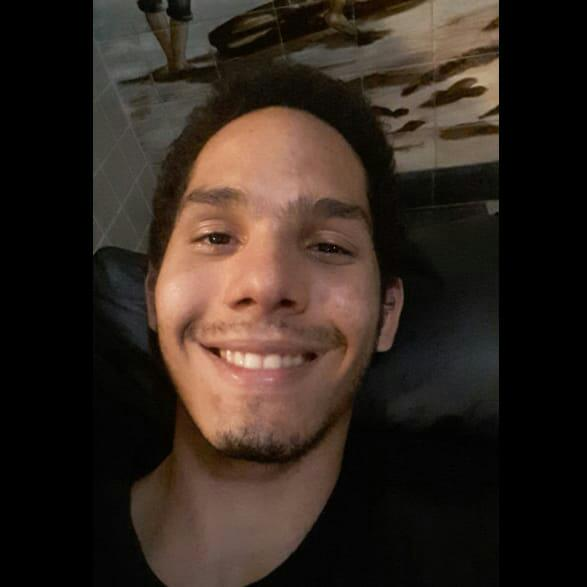

Victor Hugo
Sempre tive vontade de ter um cachorro, quando conheci o Adota.ai não resisti e adotei logos dois cachorrinhos com quem convivo há alguns meses: o Bichinho e o Kevin.
Victor Miguel
Conheci e em seguida adotei o Thor graças ao Adota.ai. Sou muito grato à equipe e admiro muito o trabalho que eles realizam resgatando animais em situação de risco.
Lucas Ambrósio
Sherlock foi adotado pela minha família há 5 anos. Sempre indico o Adota.ai aos conhecidos e amigos que tenham interesse em adotar um companheirinho animal.